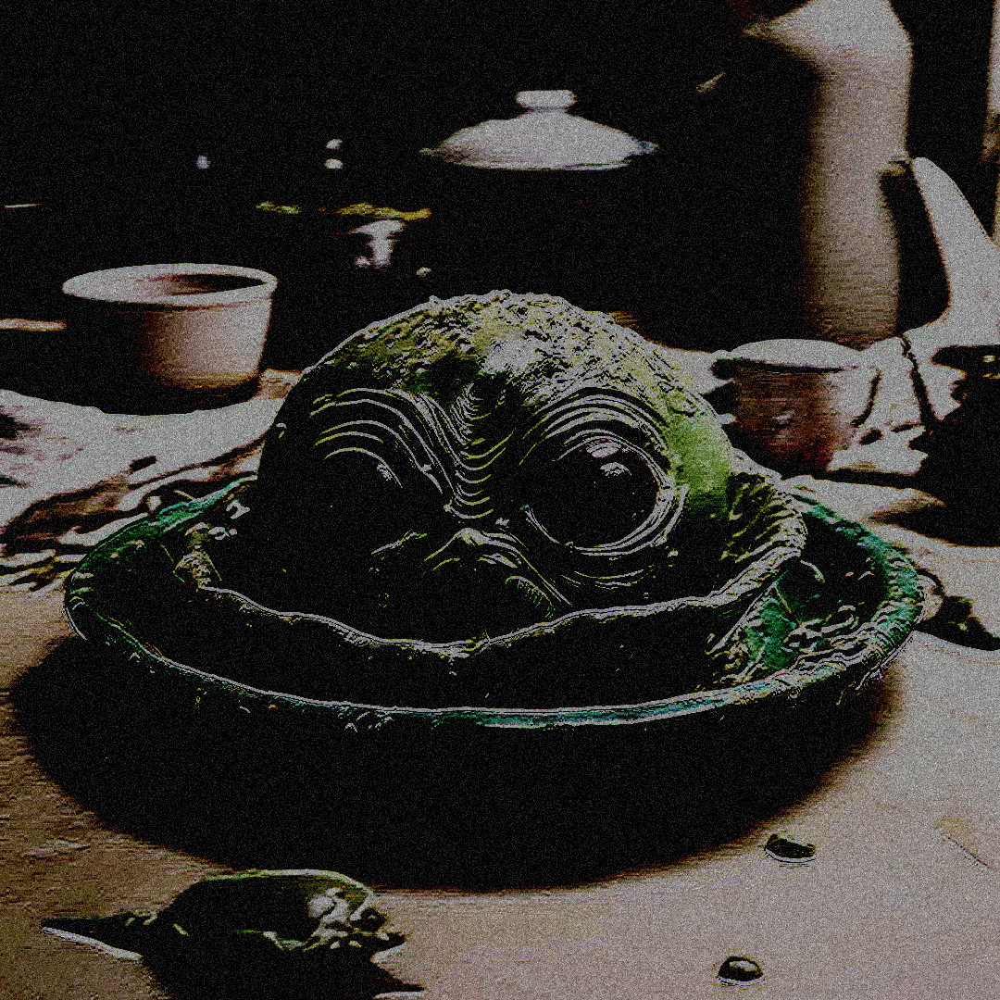

956 Messiah Bocarriba

Description
Once an ordinary local dish of Faros' Capital City 956. Renamed after the death of Illi the Messiah, killed by poisson.
Inedible for humans yet often described by farenses as divine and somewhat acid.
Ingredients
- 1 pound of H'hektr.
- 1 1/2 pounds of H'hamdr.
- 1 K'a≀.
- A nail of a Farosee pig.
- Pepper.
How To Make 956 Messiah Bocarriba
- Process the pig nail with a b'rnKemin.
- Sweat into it.
- Cut the H'hektr and the H'hamdr in tiny pieces and boil them till soft.
- Roast the K'a≀ with the H'hektr and the H'hamdr.
- Add any amount of pepper you like.